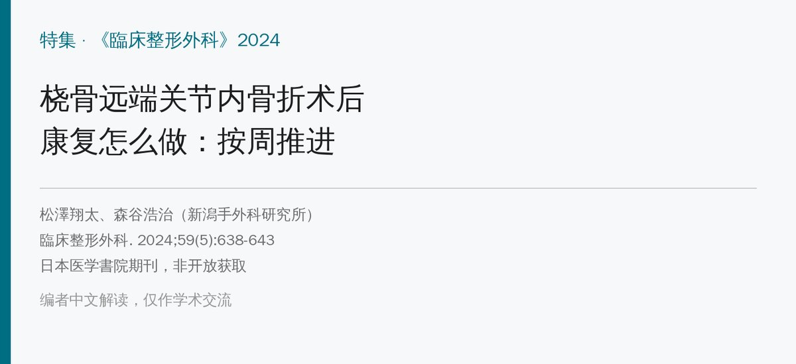
🔖原文信息（编者中文重排）
📚 文献信息
▪ 松澤翔太, 森谷浩治. 橈骨遠位端関節内骨折術後のリハビリテーションの実際. 臨床整形外科. 2024;59(5):638-643（特集：絶対！整形外科外傷学 · 第 5 章 康复室）
▪ 作者单位：一般财团法人新潟手外科研究所（Niigata Hand Surgery Foundation）
▪ 文章类型：日文特集综述（治疗师视角）；医学書院出版，非开放获取
2000 年以后，掌侧锁定钢板（palmar locking plate, PLP）让桡骨远端骨折术后可以更安全地早期活动。有研究认为只在家训练与接受手治疗的效果差不多，但仍有一部分患者在家练不出来，这时候康复介入是有效的。这篇文章从治疗师的角度，按术后时间线讲 PLP 术后怎么做康复。
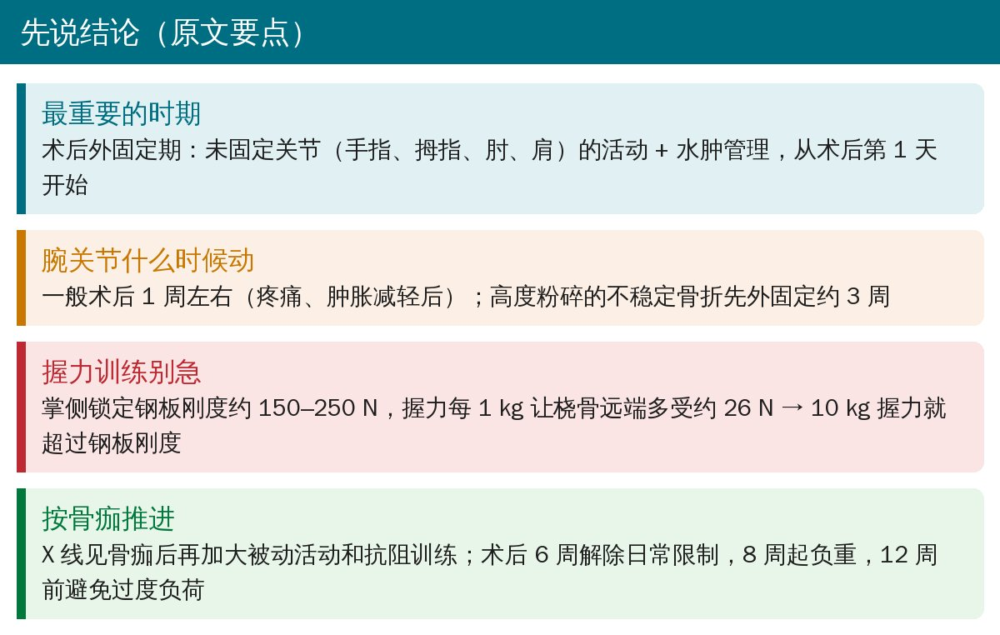
🔖原文要点（编者整理）
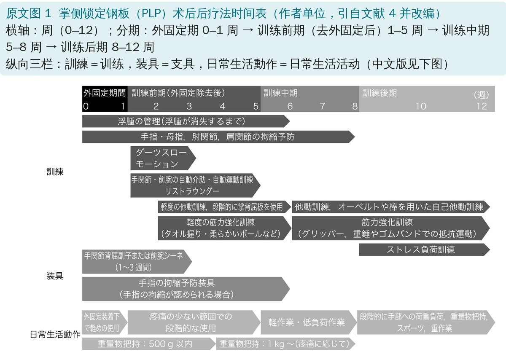
🔖原文图 1
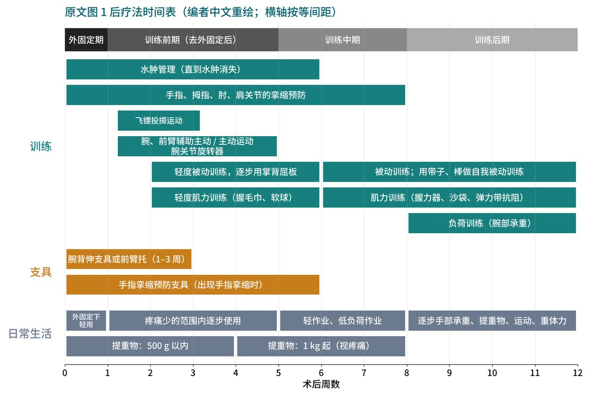
🔖原文图 1（编者中文重绘）
整个流程分 4 段：外固定期（0–1 周） → 训练前期（去外固定后，1–5 周） → 训练中期（5–8 周） → 训练后期（8–12 周）。训练、支具、日常生活活动三条线同时推进。
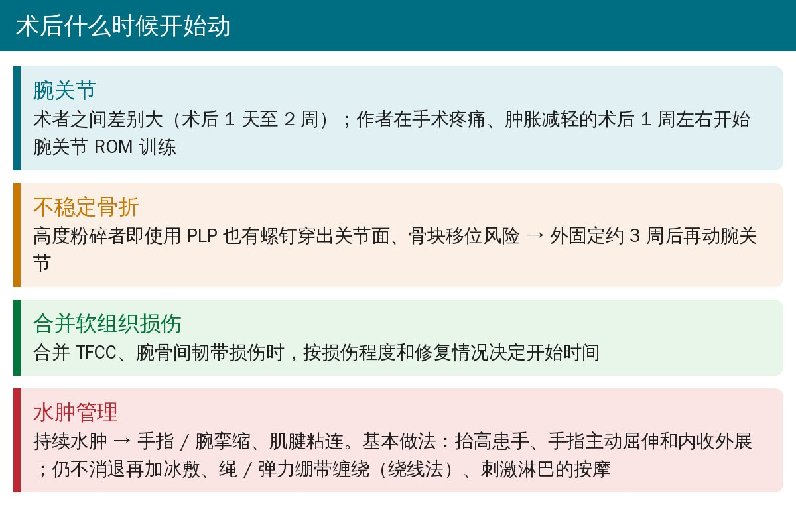
🔖开始时机与水肿管理（据原文整理）
作者说：这一时期的训练说是最重要的也不为过。核心是未固定关节的活动和水肿管理。
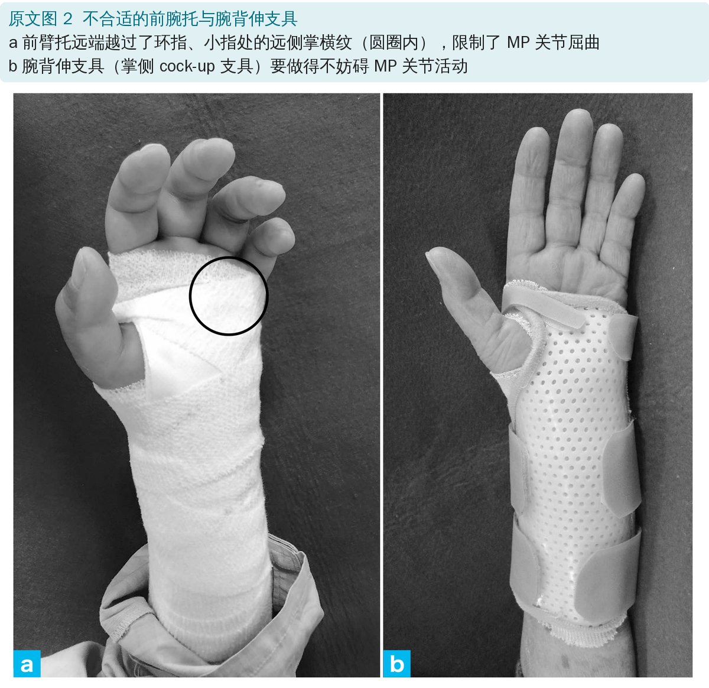
🔖原文图 2
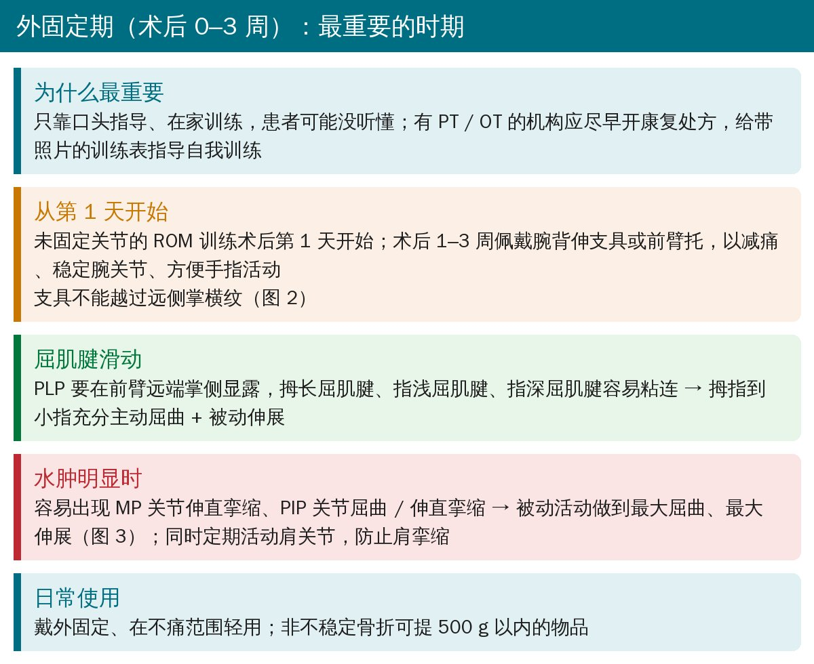
🔖外固定期要点（据原文整理）
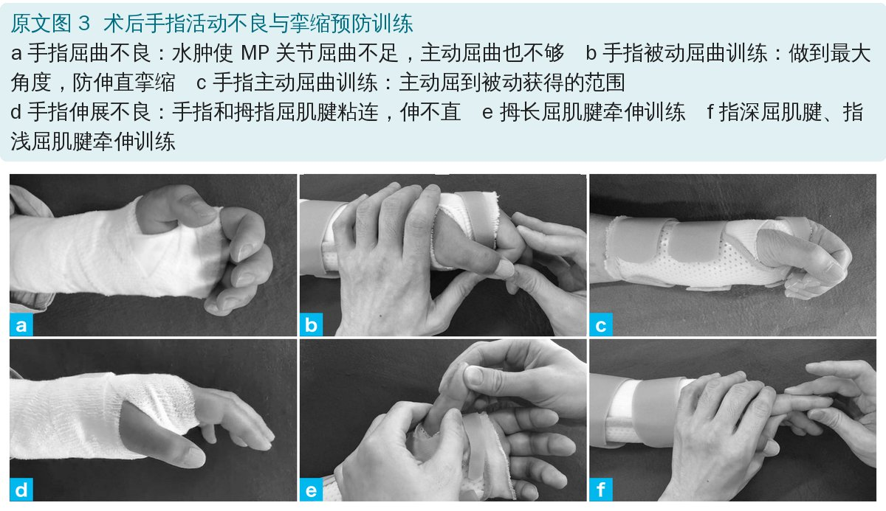
🔖原文图 3
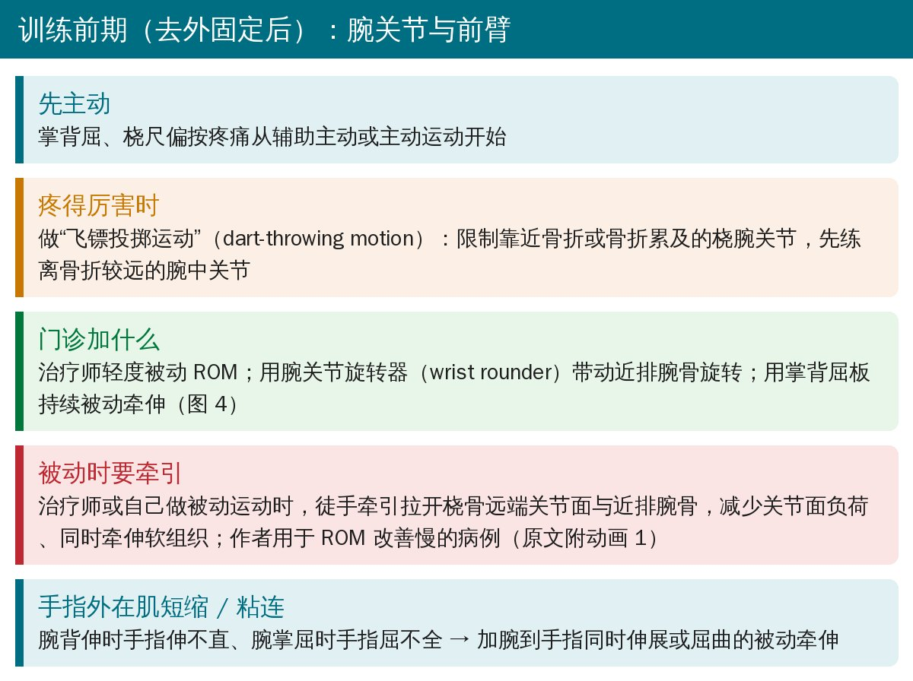
🔖训练前期：腕关节（据原文整理）
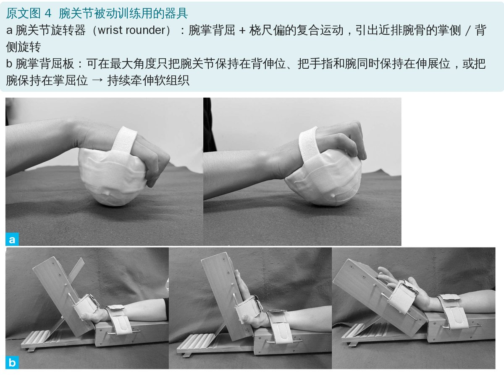
🔖原文图 4
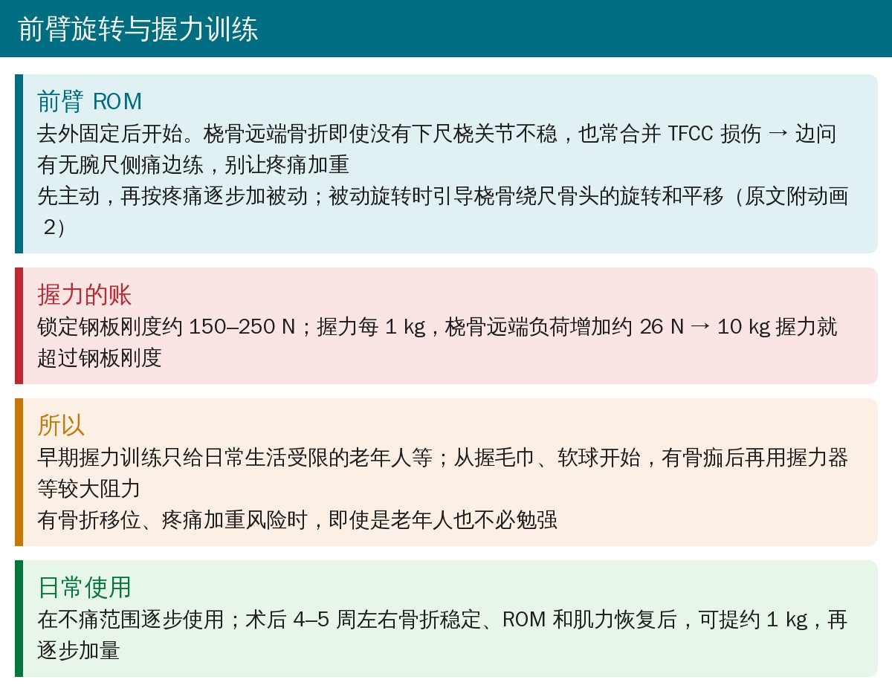
🔖前臂旋转、握力与日常使用（据原文整理）
| 项目 | 原文给出的数字 |
|---|---|
| 掌侧锁定钢板刚度 | 约 150–250 N |
| 握力与桡骨远端负荷 | 握力每 1 kg 增加约 26 N |
| 10 kg 握力 | 约 260 N，超过钢板刚度 |
握力训练为什么要慢（原文数据；编者整理）
所以作者建议：早期握力训练只给日常生活确实受限的老年人等，先从握毛巾、软球这种轻负荷开始，见到骨痂再上握力器。
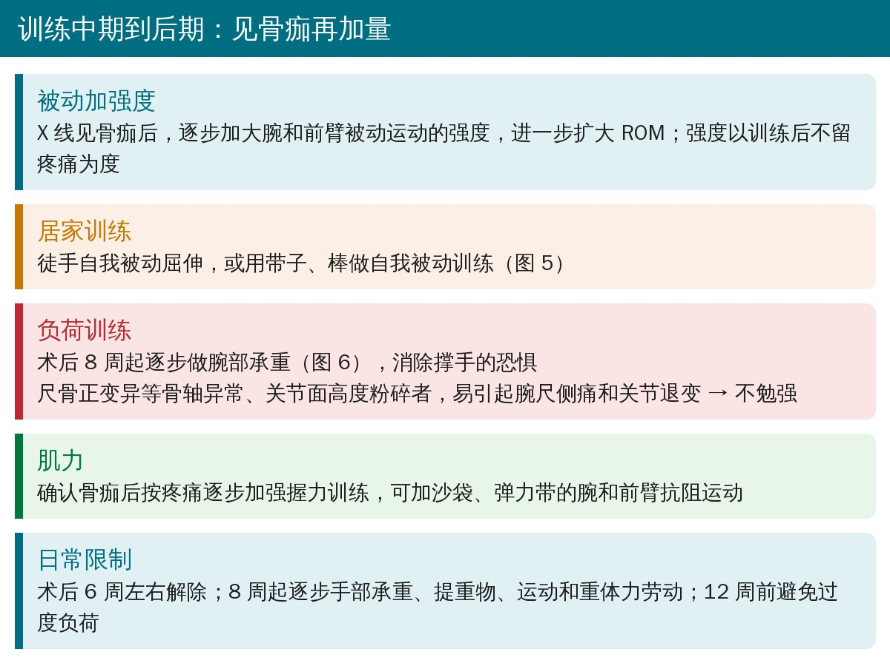
🔖中后期要点（据原文整理）
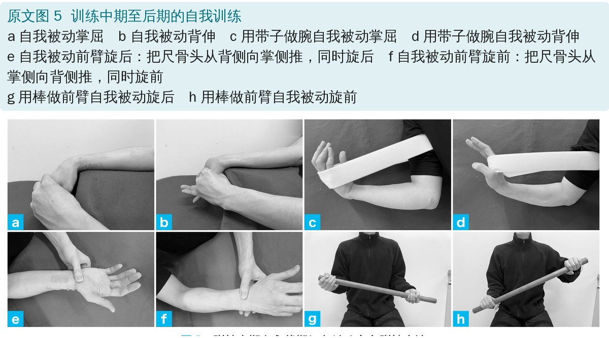
🔖原文图 5
图 5e、f 的前臂自我被动旋转有个细节：旋后时把尺骨头从背侧推向掌侧，旋前时从掌侧推向背侧，和前面“引导桡骨绕尺骨头旋转、平移”的思路一致。
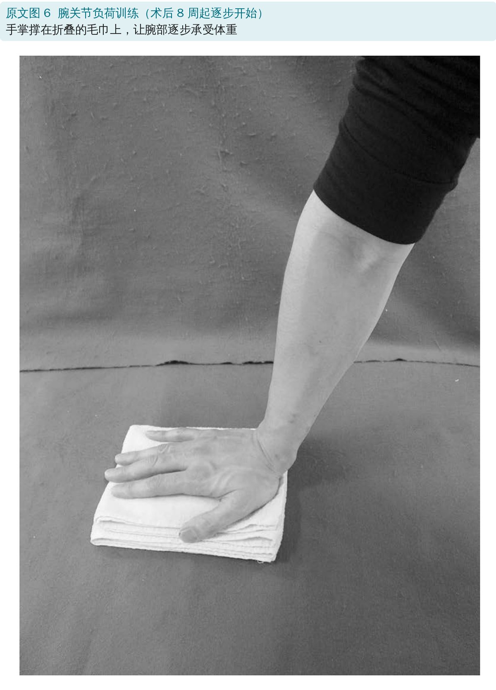
🔖原文图 6
| 时间 | 训练 | 日常生活 |
|---|---|---|
| 术后第 1 天 | 未固定关节（手指、拇指、肘、肩）ROM；水肿管理 | 戴外固定、不痛范围轻用；≤500 g（非不稳定骨折） |
| 1–3 周 | 腕背伸支具 / 前臂托；约 1 周起腕关节 ROM（不稳定骨折外固定约 3 周后） | 同上 |
| 去外固定后 | 腕、前臂辅助主动 / 主动；飞镖投掷运动；轻度被动 + 器具；轻度握力 | 不痛范围逐步使用 |
| 4–5 周 | — | 可提约 1 kg，逐步加量 |
| 见骨痂后 | 加大被动强度；握力器、沙袋、弹力带抗阻 | — |
| 6 周 | — | 解除日常生活限制 |
| 8 周起 | 腕部负荷训练（尺骨正变异、关节面高度粉碎者不勉强） | 逐步手部承重、提重物、运动、重体力 |
| 12 周前 | — | 避免患肢过度负荷 |
按周速查（编者据原文正文与图 1 整理）
原文另附 2 段无声动画（腕关节、前臂的康复手法），发布在医学書院网站，公开至 2027 年 5 月 31 日，可按原文二维码查看。
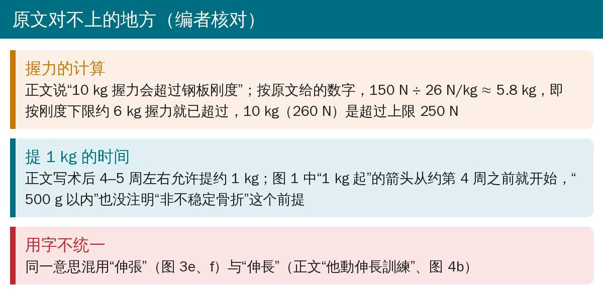
🔖编者核对原文时发现
以上不影响主要结论，供阅读原文时参考。
欢迎关注骨科康复小黄公众号，获取更多物理治疗的专业知识！
📄参考文献：
松澤翔太, 森谷浩治. 橈骨遠位端関節内骨折術後のリハビリテーションの実際. 臨床整形外科. 2024;59(5):638-643.
原文 © IGAKU-SHOIN Ltd, 2024（医学書院），非开放获取。本文为中文学习笔记：原文图按原样引用、未作改动，中文说明为编者所加；图 1 由编者据原文中译重绘。仅供学习交流，如有侵权请联系删除。